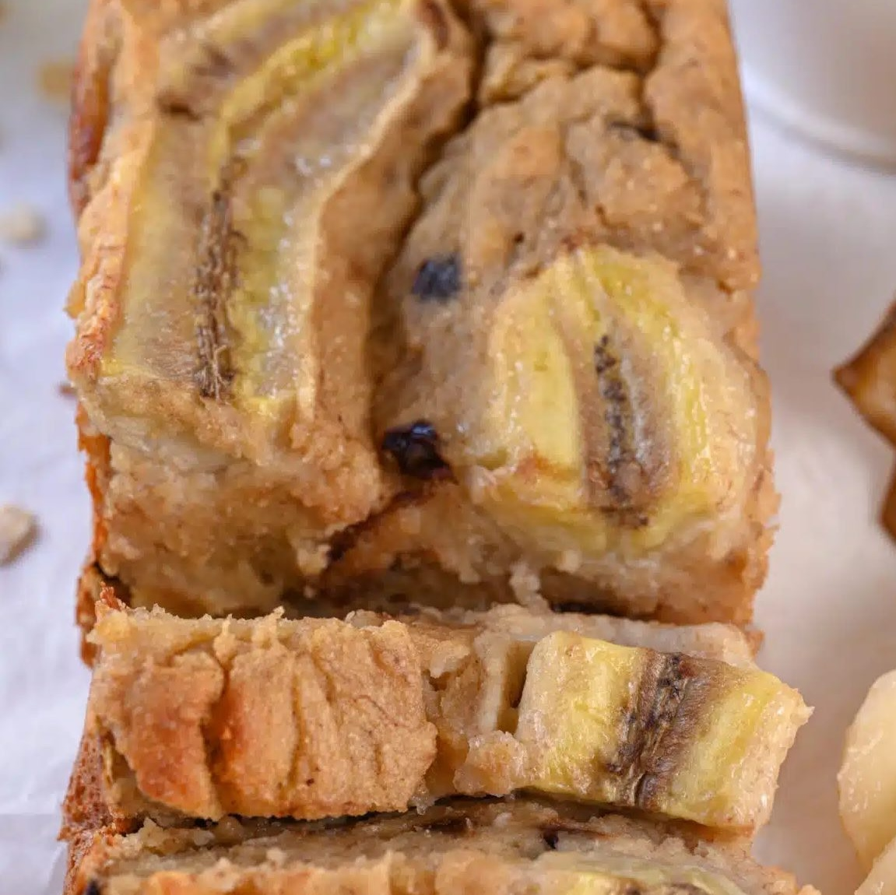

⭐️Banana Bread
Ingredientes:
- 1 huevo
- 1 clara de huevo o un huevo entero
- 2 plátanos muy maduros
- 45 gramos (3 cucharadas) de jarabe de arce o miel
- 1 cucharadita de extracto de vainilla
- ½ cucharadita de canela molida
- ⅙ cucharadita de sal
- 180 gramos (1 ¾ tazas) de harina de avena o la harina de tu referencia
- 15 a 45 ml (1 a 3 cucharadas) de leche de tu elección para obtener la consistencia deseada
- 1 ½ cucharadita de polvo de hornear
Instrucciones:
- Precalienta el horno a 180°C (350°F) y forra un molde para pan de 20 cm (7.9 pulgadas) con papel
pergamino o engrasa con aceite.
- En un bol grande, aplasta los plátanos maduros con un tenedor hasta que estén completamente suaves,
luego agrega el huevo, la clara de huevo, el jarabe de arce, el extracto de vainilla, la canela
molida y una pizca de sal. Mezcla bien hasta obtener una masa homogénea.
- Incorpora la harina de avena y el polvo de hornear a la mezcla. Remueve la masa del pan de plátano
mientras agregas la leche gradualmente. Comienza con poca leche (alrededor de 1 cucharada) y añade
hasta 3 cucharadas (45 ml) solo si la masa aún está demasiado seca.
- Vierte la masa en el molde para pan preparado. Hornea en el horno caliente durante 30 a 40 minutos,
o hasta que un palillo insertado en el centro del pan de plátano bajo en calorías salga limpio.
- Saca el postre del horno y deja enfriar en el molde durante unos 15 minutos. Finalmente, sácalo del
molde y deja enfriar completamente antes de cortarlo en rebanadas.